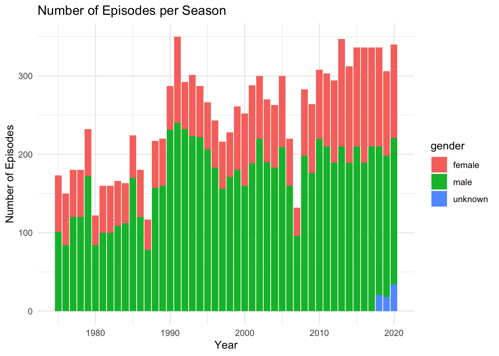

library(tidyverse)
library(ggplot2)
knitr::opts_chunk$set(echo = TRUE, warning=FALSE, message=FALSE)Challenge 8
Matthew_Weiner
challenge_8
snl
Joining Data
Challenge Overview
Today’s challenge is to:
- read in multiple data sets, and describe the data set using both words and any supporting information (e.g., tables, etc)
- tidy data (as needed, including sanity checks)
- mutate variables as needed (including sanity checks)
- join two or more data sets and analyze some aspect of the joined data
(be sure to only include the category tags for the data you use!)
Read in data
Read in one (or more) of the following datasets, using the correct R package and command.
- military marriages ⭐⭐
- faostat ⭐⭐
- railroads ⭐⭐⭐
- fed_rate ⭐⭐⭐
- debt ⭐⭐⭐
- us_hh ⭐⭐⭐⭐
- snl ⭐⭐⭐⭐⭐
library(readr)
actors <- read_csv("_data/snl_actors.csv")
casts <- read_csv("_data/snl_casts.csv")
seasons <- read_csv("_data/snl_seasons.csv")head(actors)# A tibble: 6 × 4
aid url type gender
<chr> <chr> <chr> <chr>
1 Kate McKinnon /Cast/?KaMc cast female
2 Alex Moffat /Cast/?AlMo cast male
3 Ego Nwodim /Cast/?EgNw cast unknown
4 Chris Redd /Cast/?ChRe cast male
5 Kenan Thompson /Cast/?KeTh cast male
6 Carey Mulligan /Guests/?3677 guest andy colnames(actors)[1] "aid" "url" "type" "gender"head(casts)# A tibble: 6 × 8
aid sid featured first_epid last_epid update_…¹ n_epi…² seaso…³
<chr> <dbl> <lgl> <dbl> <dbl> <lgl> <dbl> <dbl>
1 A. Whitney Brown 11 TRUE 19860222 NA FALSE 8 0.444
2 A. Whitney Brown 12 TRUE NA NA FALSE 20 1
3 A. Whitney Brown 13 TRUE NA NA FALSE 13 1
4 A. Whitney Brown 14 TRUE NA NA FALSE 20 1
5 A. Whitney Brown 15 TRUE NA NA FALSE 20 1
6 A. Whitney Brown 16 TRUE NA NA FALSE 20 1
# … with abbreviated variable names ¹update_anchor, ²n_episodes,
# ³season_fractioncolnames(casts)[1] "aid" "sid" "featured" "first_epid"
[5] "last_epid" "update_anchor" "n_episodes" "season_fraction"head(seasons)# A tibble: 6 × 5
sid year first_epid last_epid n_episodes
<dbl> <dbl> <dbl> <dbl> <dbl>
1 1 1975 19751011 19760731 24
2 2 1976 19760918 19770521 22
3 3 1977 19770924 19780520 20
4 4 1978 19781007 19790526 20
5 5 1979 19791013 19800524 20
6 6 1980 19801115 19810411 13colnames(seasons)[1] "sid" "year" "first_epid" "last_epid" "n_episodes"dim(actors)[1] 2306 4dim(casts)[1] 614 8dim(seasons)[1] 46 5Briefly describe the data
These datasets contain various information about the television program, Saturday Night Live (SNL). The snl_casts dataset contains information on the episodes and seasons in which each actor was cast. The snl_seasons dataset contains information about each season such as the number of episodes, when the first and last episode airs, and the year that the season started. Finally, the snl_actors dataset contains information about each actor that appeared in SNL such as their role and the type of appearance. The actors dataset contains 2306 rows and 4 columns, while the casts dataset contains 614 rows and 8 columns. Finally, the seasons dataset contains just 46 rows and 5 columns.
Tidy Data (as needed)
The first thing we want to check is if there is any missing data in any of the three datasets.
sum(is.na(actors))[1] 57sum(is.na(casts))[1] 1161sum(is.na(seasons))[1] 0We can indeed see that both the actors dataset and the casts dataset contain rows with missing values. However, at this point we are going to allow these rows to remain in the dataset to prevent the loss of otherwise useful information.
Another thing we can do to tidy up our dataset is re-format the start and end date of the seasons. Currently, they are in a format where the date is being stored as a dbl however we would rather these be a date object. We can mutate the data to accomplish this:
library(dplyr)
seasons <- mutate(seasons,first_epid = as.Date(as.character(first_epid),format="%Y%m%d"), last_epid = as.Date(as.character(last_epid), format = "%Y%m%d"))
#sanity check
table(seasons$first_epid)
1975-10-11 1976-09-18 1977-09-24 1978-10-07 1979-10-13 1980-11-15 1981-10-03
1 1 1 1 1 1 1
1982-09-25 1983-10-08 1984-10-06 1985-11-09 1986-10-11 1987-10-17 1988-10-08
1 1 1 1 1 1 1
1989-09-30 1990-09-29 1991-09-28 1992-09-26 1993-09-25 1994-09-24 1995-09-30
1 1 1 1 1 1 1
1996-09-28 1997-09-27 1998-09-26 1999-10-02 2000-10-07 2001-09-29 2002-10-05
1 1 1 1 1 1 1
2003-10-04 2004-10-02 2005-10-01 2006-09-30 2007-09-29 2008-09-13 2009-09-26
1 1 1 1 1 1 1
2010-09-25 2011-09-24 2012-09-15 2013-09-28 2014-09-27 2015-10-03 2016-10-01
1 1 1 1 1 1 1
2017-09-30 2018-09-29 2019-09-28 2020-10-03
1 1 1 1 table(seasons$last_epid)
1976-07-31 1977-05-21 1978-05-20 1979-05-26 1980-05-24 1981-04-11 1982-05-22
1 1 1 1 1 1 1
1983-05-14 1984-05-12 1985-04-13 1986-05-24 1987-05-23 1988-02-27 1989-05-20
1 1 1 1 1 1 1
1990-05-19 1991-05-18 1992-05-16 1993-05-15 1994-05-14 1995-05-13 1996-05-18
1 1 1 1 1 1 1
1997-05-17 1998-05-09 1999-05-15 2000-05-20 2001-05-19 2002-05-18 2003-05-17
1 1 1 1 1 1 1
2004-05-15 2005-05-21 2006-05-20 2007-05-19 2008-05-17 2009-05-16 2010-05-15
1 1 1 1 1 1 1
2011-05-21 2012-05-19 2013-05-18 2014-05-17 2015-05-16 2016-05-21 2017-05-20
1 1 1 1 1 1 1
2018-05-19 2019-05-18 2020-05-09 2021-04-10
1 1 1 1 We can also apply this to the casts dataset:
casts <- mutate(casts,first_epid = as.Date(as.character(first_epid),format="%Y%m%d"), last_epid = as.Date(as.character(last_epid), format = "%Y%m%d"))
#sanity check
table(casts$first_epid)
1977-01-15 1979-10-13 1979-11-17 1979-12-15 1980-01-26 1980-04-09 1980-12-13
1 1 2 1 3 2 3
1980-12-20 1981-04-11 1986-02-22 1986-03-22 1989-01-21 1989-03-25 1990-10-27
1 5 1 1 1 1 1
1990-11-10 1991-02-09 1991-11-16 1993-10-02 1993-10-09 1994-03-12 1995-01-14
2 2 2 1 2 1 1
1995-02-25 1995-04-08 1996-03-16 1999-10-23 2000-05-06 2002-03-02 2005-05-07
1 1 1 1 1 1 1
2005-11-12 2008-02-23 2008-11-15 2012-04-07 2014-01-18 2014-03-01 2014-10-25
1 1 2 1 1 1 1 table(seasons$last_epid)
1976-07-31 1977-05-21 1978-05-20 1979-05-26 1980-05-24 1981-04-11 1982-05-22
1 1 1 1 1 1 1
1983-05-14 1984-05-12 1985-04-13 1986-05-24 1987-05-23 1988-02-27 1989-05-20
1 1 1 1 1 1 1
1990-05-19 1991-05-18 1992-05-16 1993-05-15 1994-05-14 1995-05-13 1996-05-18
1 1 1 1 1 1 1
1997-05-17 1998-05-09 1999-05-15 2000-05-20 2001-05-19 2002-05-18 2003-05-17
1 1 1 1 1 1 1
2004-05-15 2005-05-21 2006-05-20 2007-05-19 2008-05-17 2009-05-16 2010-05-15
1 1 1 1 1 1 1
2011-05-21 2012-05-19 2013-05-18 2014-05-17 2015-05-16 2016-05-21 2017-05-20
1 1 1 1 1 1 1
2018-05-19 2019-05-18 2020-05-09 2021-04-10
1 1 1 1 Join Data
I intend to join the seasons and casts dataset based on the season ID, sid, and then join this with the actors dataset based on the actor ID, aid.
seasons_casts <- seasons %>% left_join(casts,by="sid")
#sanity check
seasons_casts# A tibble: 614 × 12
sid year first_ep…¹ last_epi…² n_epi…³ aid featu…⁴ first_ep…⁵ last_epi…⁶
<dbl> <dbl> <date> <date> <dbl> <chr> <lgl> <date> <date>
1 1 1975 1975-10-11 1976-07-31 24 Gild… FALSE NA NA
2 1 1975 1975-10-11 1976-07-31 24 Mich… FALSE NA 1975-11-08
3 1 1975 1975-10-11 1976-07-31 24 Lara… FALSE NA NA
4 1 1975 1975-10-11 1976-07-31 24 Garr… FALSE NA NA
5 1 1975 1975-10-11 1976-07-31 24 Jane… FALSE NA NA
6 1 1975 1975-10-11 1976-07-31 24 Geor… FALSE NA 1975-10-11
7 1 1975 1975-10-11 1976-07-31 24 Chev… FALSE NA NA
8 1 1975 1975-10-11 1976-07-31 24 John… FALSE NA NA
9 1 1975 1975-10-11 1976-07-31 24 Dan … FALSE NA NA
10 2 1976 1976-09-18 1977-05-21 22 Gild… FALSE NA NA
# … with 604 more rows, 3 more variables: update_anchor <lgl>,
# n_episodes.y <dbl>, season_fraction <dbl>, and abbreviated variable names
# ¹first_epid.x, ²last_epid.x, ³n_episodes.x, ⁴featured, ⁵first_epid.y,
# ⁶last_epid.ycolnames(seasons_casts) [1] "sid" "year" "first_epid.x" "last_epid.x"
[5] "n_episodes.x" "aid" "featured" "first_epid.y"
[9] "last_epid.y" "update_anchor" "n_episodes.y" "season_fraction"Now we will join with the actors dataset:
seasons_casts_actors <- seasons_casts %>%
left_join(actors, by = "aid")
#sanity check
seasons_casts_actors# A tibble: 614 × 15
sid year first_ep…¹ last_epi…² n_epi…³ aid featu…⁴ first_ep…⁵ last_epi…⁶
<dbl> <dbl> <date> <date> <dbl> <chr> <lgl> <date> <date>
1 1 1975 1975-10-11 1976-07-31 24 Gild… FALSE NA NA
2 1 1975 1975-10-11 1976-07-31 24 Mich… FALSE NA 1975-11-08
3 1 1975 1975-10-11 1976-07-31 24 Lara… FALSE NA NA
4 1 1975 1975-10-11 1976-07-31 24 Garr… FALSE NA NA
5 1 1975 1975-10-11 1976-07-31 24 Jane… FALSE NA NA
6 1 1975 1975-10-11 1976-07-31 24 Geor… FALSE NA 1975-10-11
7 1 1975 1975-10-11 1976-07-31 24 Chev… FALSE NA NA
8 1 1975 1975-10-11 1976-07-31 24 John… FALSE NA NA
9 1 1975 1975-10-11 1976-07-31 24 Dan … FALSE NA NA
10 2 1976 1976-09-18 1977-05-21 22 Gild… FALSE NA NA
# … with 604 more rows, 6 more variables: update_anchor <lgl>,
# n_episodes.y <dbl>, season_fraction <dbl>, url <chr>, type <chr>,
# gender <chr>, and abbreviated variable names ¹first_epid.x, ²last_epid.x,
# ³n_episodes.x, ⁴featured, ⁵first_epid.y, ⁶last_epid.ycolnames(seasons_casts_actors) [1] "sid" "year" "first_epid.x" "last_epid.x"
[5] "n_episodes.x" "aid" "featured" "first_epid.y"
[9] "last_epid.y" "update_anchor" "n_episodes.y" "season_fraction"
[13] "url" "type" "gender" Now that we have properly joined these datsets together we can attempt to gain more insights into the data.
For example, one interesting thing we could do is to look at the number of episodes per season for each gender:
library(ggplot2)
ggplot(data = seasons_casts_actors, aes(x = year, y = n_episodes.y, fill = gender)) +
geom_bar(stat = "identity") +
labs(x = "Year", y = "Number of Episodes", title = "Number of Episodes per Season") +
theme_minimal()